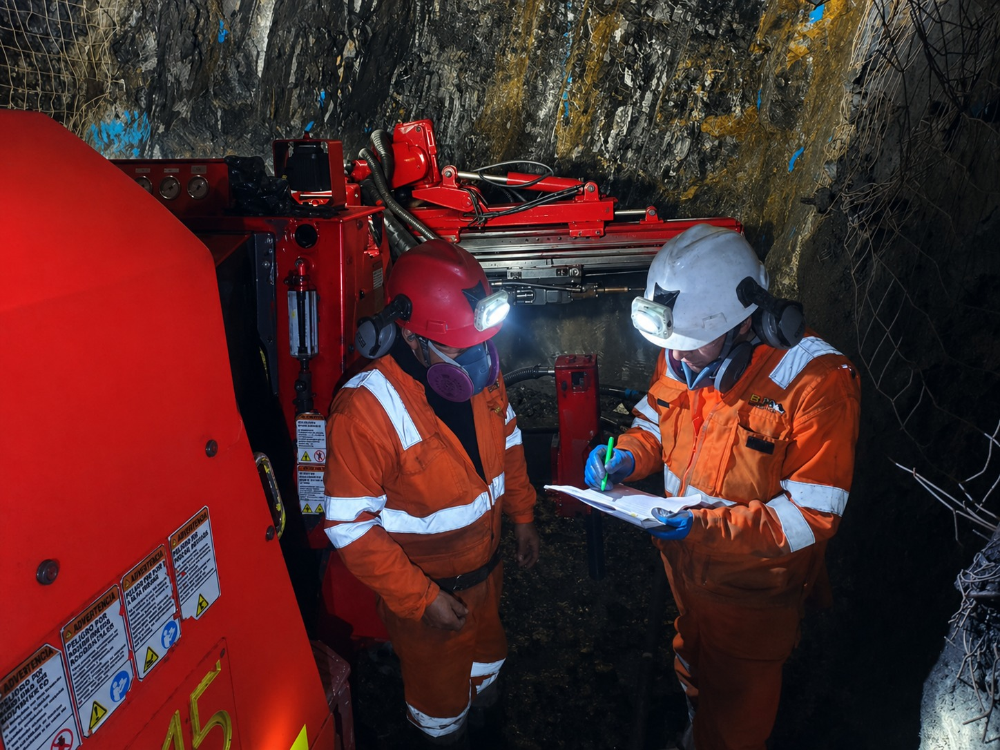
Seguridad
control operativo, orden y supervision en campo
GEOGREEN CORPORATION S.A.C.
En GEOGREEN CORPORATION, transformamos recursos naturales en oportunidades sostenibles. Somos una empresa especializada en la extraccion de minerales, comprometida con los mas altos estandares de seguridad, eficiencia y responsabilidad ambiental.
Nuestra operacion se basa en la precision tecnica y la innovacion constante, garantizando procesos optimizados que maximizan el valor de cada proyecto. Contamos con un equipo altamente capacitado y maquinaria especializada que nos permite ejecutar trabajos en condiciones exigentes, cumpliendo rigurosamente con las normativas vigentes.
Creemos firmemente que el desarrollo minero debe ir de la mano con el respeto por el entorno y las comunidades. Por ello, trabajamos con un enfoque responsable, priorizando practicas sostenibles y relaciones de confianza a largo plazo.
En GEOGREEN, no solo extraemos minerales: generamos progreso, impulsamos crecimiento y construimos futuro.

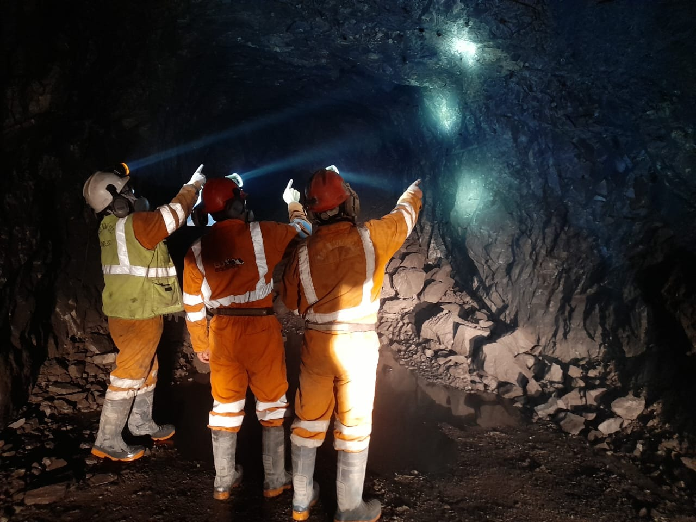
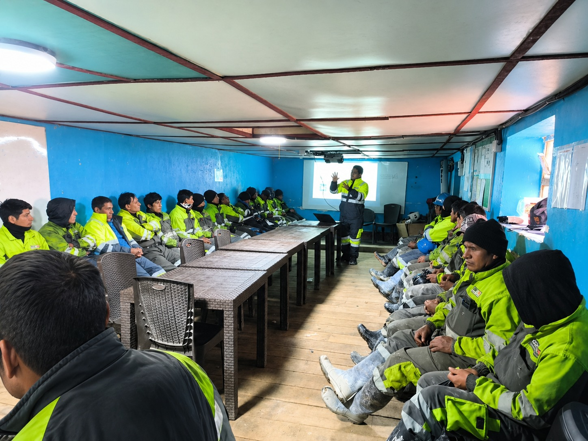
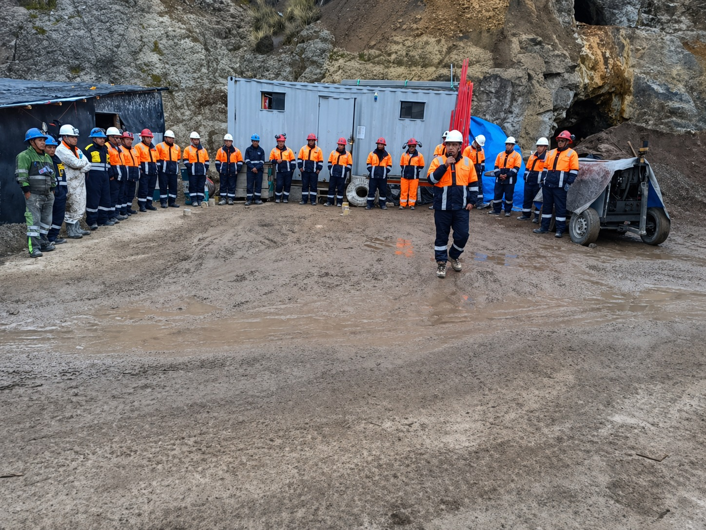
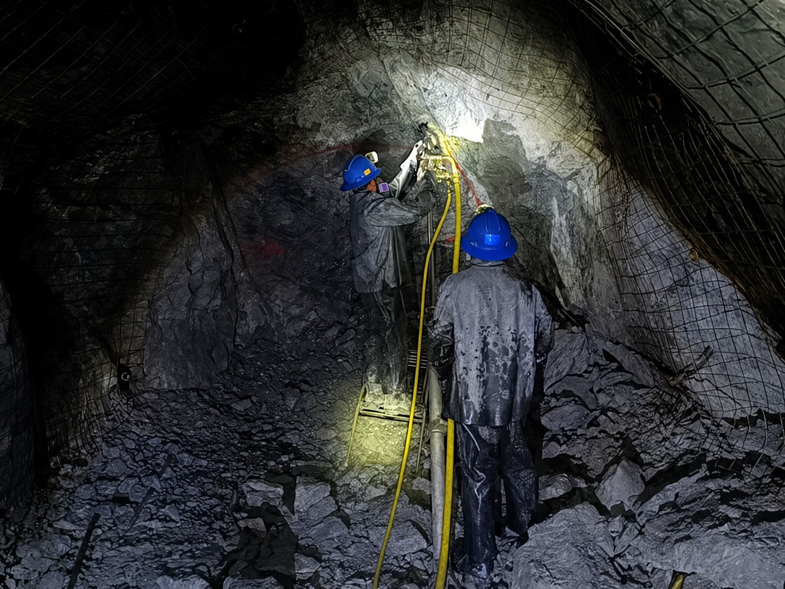
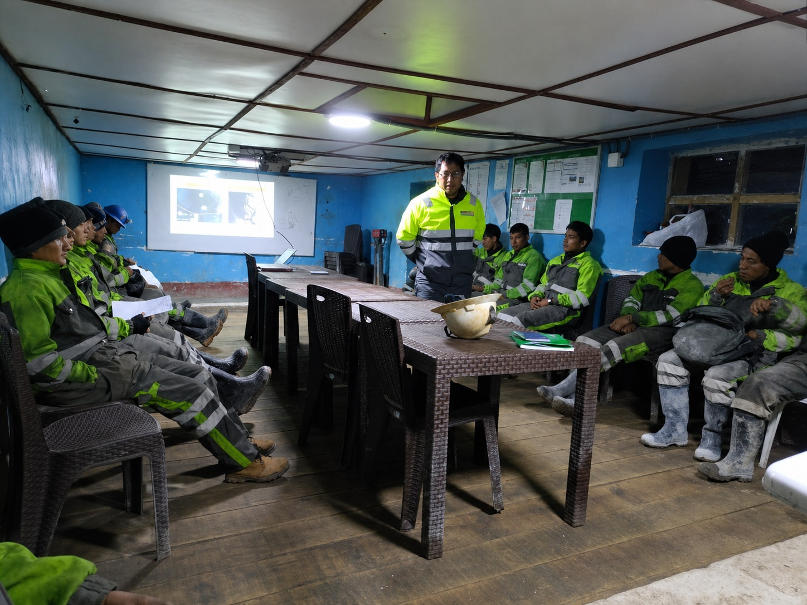
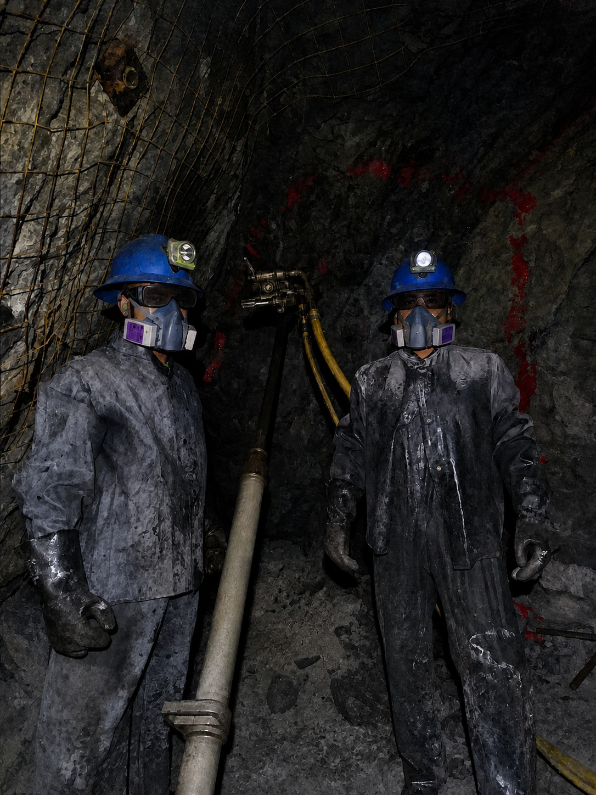
Una presencia sobria, tecnica y confiable para una empresa orientada a la productividad minera y al trabajo responsable.
NUESTRA ESENCIA
NUESTRA ESENCIA
En GEOGREEN CORPORATION. construimos mas que operaciones mineras: construimos confianza. Nuestra esencia se basa en una identidad firme, profesional y orientada al crecimiento sostenible dentro del sector.
Somos una empresa que proyecta seriedad y solidez en cada proceso. Actuamos con disciplina operativa, cuidando cada detalle para garantizar resultados eficientes, seguros y consistentes en el tiempo.
Nuestra fortaleza radica en la capacidad de adaptarnos a los desafios del entorno minero, manteniendo siempre altos estandares tecnicos y una mentalidad de mejora continua. Apostamos por el desarrollo responsable, integrando tecnologia, talento humano y buenas practicas que nos permiten crecer de manera estructurada y sostenible.
Trabajamos con vision de futuro, preparados para expandir nuestras operaciones y consolidarnos como un referente confiable en la industria.
GEOGREEN es compromiso, es precision y es evolucion constante.
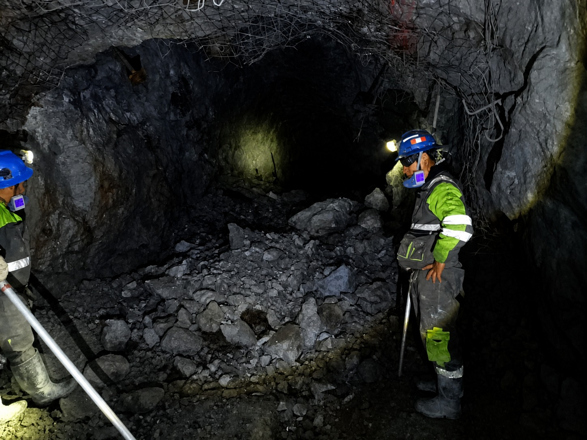
SERVICIOS Y CAPACIDADES
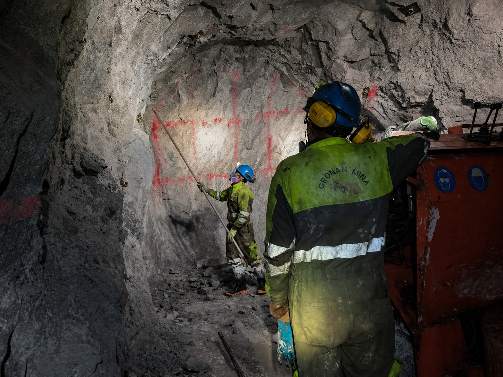
Desarrollo y avance de labores mineras con enfoque en productividad, control y seguridad operacional.
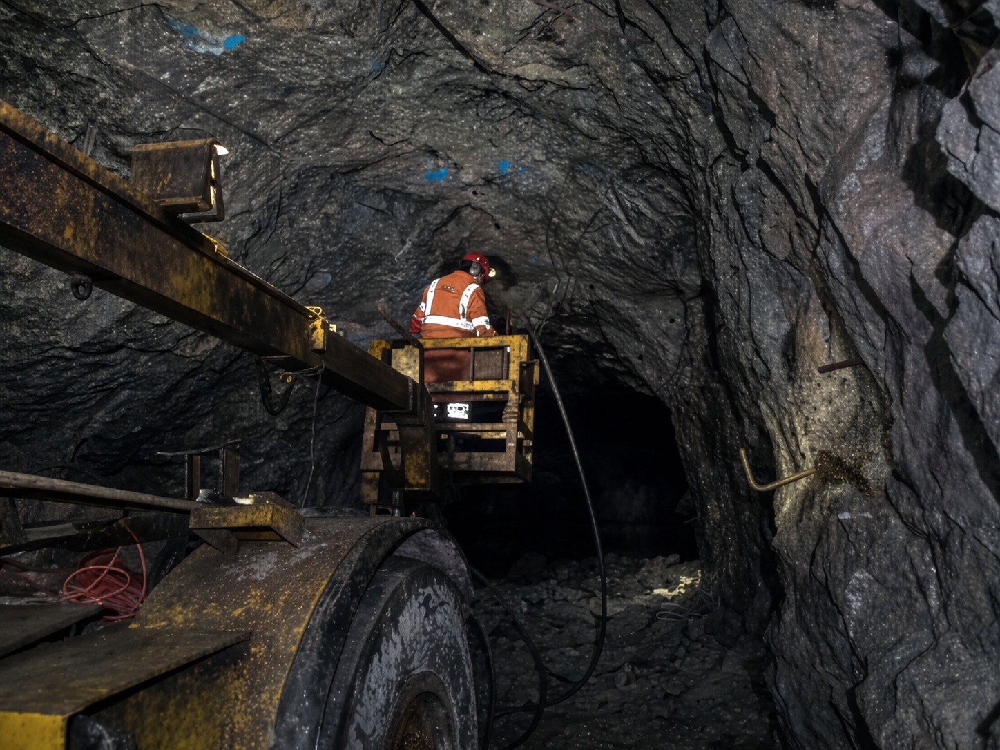
Equipos especializados para preparacion de frentes, perforacion y continuidad de las operaciones bajo estandares tecnicos.
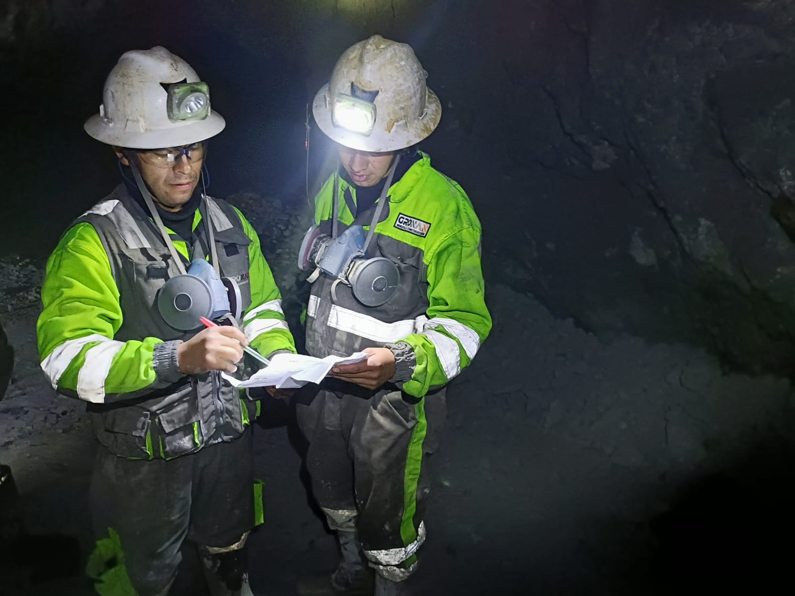
Coordinacion de maquinaria, personal y procesos para una extraccion eficiente y orientada a resultados sostenibles.
MAQUINARIA DESTACADA
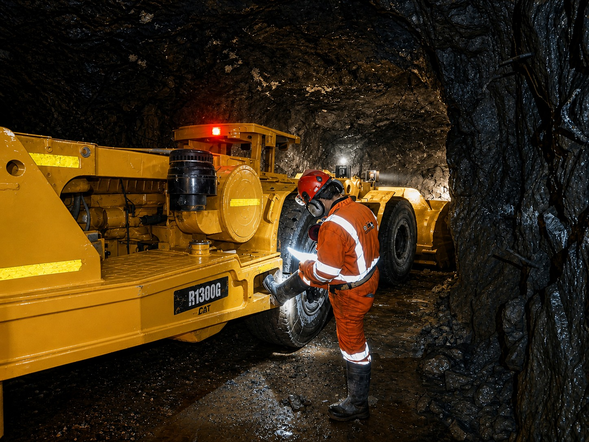
Equipo de carguio y soporte operativo para movimiento subterraneo de material y continuidad de la produccion.
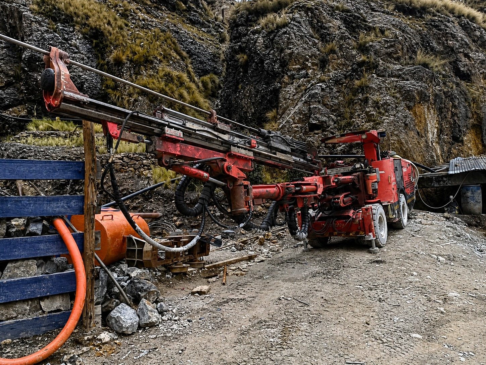
Unidad orientada a perforacion y preparacion de labores, reforzando el perfil tecnico e industrial de la operacion.
PILARES
Protocolos, supervision y trabajo responsable en cada frente minero.
Personal, maquinaria y control de campo para operaciones continuas.
Una presentacion seria para clientes, socios y proyectos mineros.
Base lista para crecer con proyectos, clientes y presencia digital.
CONTACTO
Nuestro equipo esta preparado para brindarte asesoria desde el primer contacto, escuchando tus necesidades y proponiendo alternativas tecnicas que se ajusten a tus objetivos operativos. Ya sea que estes iniciando un nuevo proyecto o necesites optimizar procesos existentes, estamos listos para acompanarte en cada etapa.
Nos caracterizamos por una comunicacion clara, tiempos de respuesta oportunos y un enfoque directo en soluciones. Creemos que una buena coordinacion desde el inicio es clave para el exito de cualquier operacion.
Si buscas un aliado estrategico en el sector minero, este es el momento de dar el siguiente paso.
Contactanos hoy y empecemos a trabajar juntos.